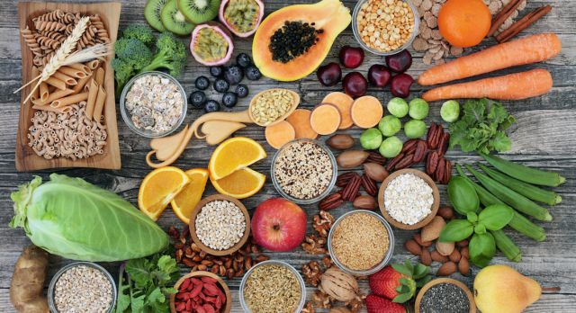

Pancitos de Verdeo con Crema de porotos
Empanaditas
Ceviche de Hongos
Poke
Panchito Pantano
Carrot cake
Churritos
Poroto pollar - Chile - Verdeo - Sésamo
$275
Proteína de soja - Aceitunas - Criolla
$300
Hongos - Mango - Cebolla morada - Maíz cancha
$385
Arroz de sushi - Tofu marinado - Chips de kale - Papaya pepino - Rabanitos - Espárragos - Wasabi - Salsa cítrica
$495
Salchitofu - Chimichurri de palta - Papas pay
$385
Zanahoria - Queso crema vegano - Nueces
$275
Churros - Chocolate
$130
Food
Description
Price
Pantano tips:
Seitán 🌱 el fav de muches.
Su aspecto es muy parecido al de la carne real, pero se hace a partir de gluten de trigo y salsa de soja.
Está lleno de nutrientes 💪 en los que se destacan las proteínas, vitaminas y distintos tipos de minerales.
Tofu 🇨🇳 viene de China 💮 y en pantano lo amamos💚💚 Crudo puede tener poco sabor, pero condimentado con salsitas y especias es un camino de ida 🔮
Tempeh 🧚♀️ muy parecido al tofu. Tiene muy pocas grasas y eso hace que sea más fácil de digerir para nuestros cuerpos 🫀
Gran aporte de proteínas e hidratos de carbono.
Lentejas 🤍 ricas en hierro, potasio, magnesio, ácido fólico y sabo o o o r 👽
